Some Facts About Me.
My favorite games
I’m a big fan of League of Legends, and I reached Master in Teamfight Tactics (TFT) for two seasons.
Meet Xayah
Xayah is my beautiful tuxedo cat. I adopted her in 2022, when I had just arrived in Canada.
A thank-you
I’m grateful to everyone who has helped me along the way. Thank you, Kinsey, Jack, Elliot, and Li Ruan. And of course, thank you to Yixuan Xin, the love of my life.
Photo Gallery

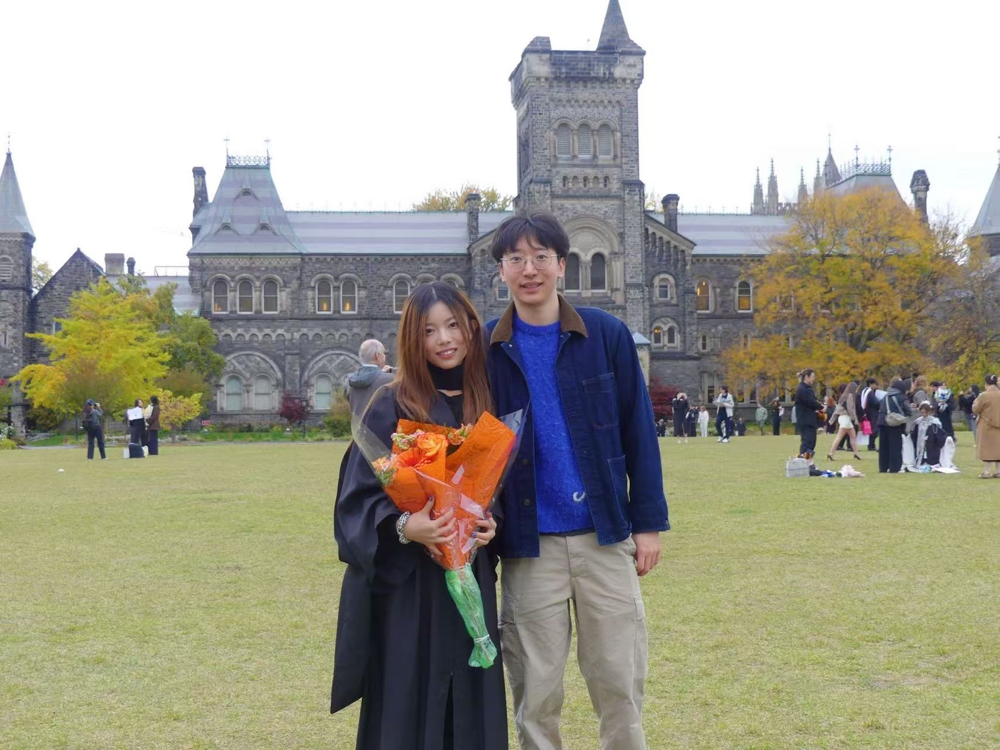

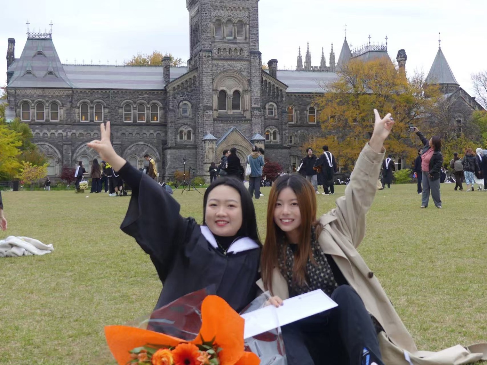

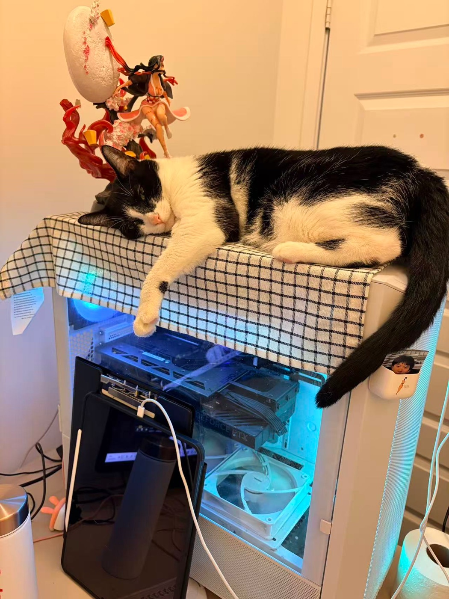

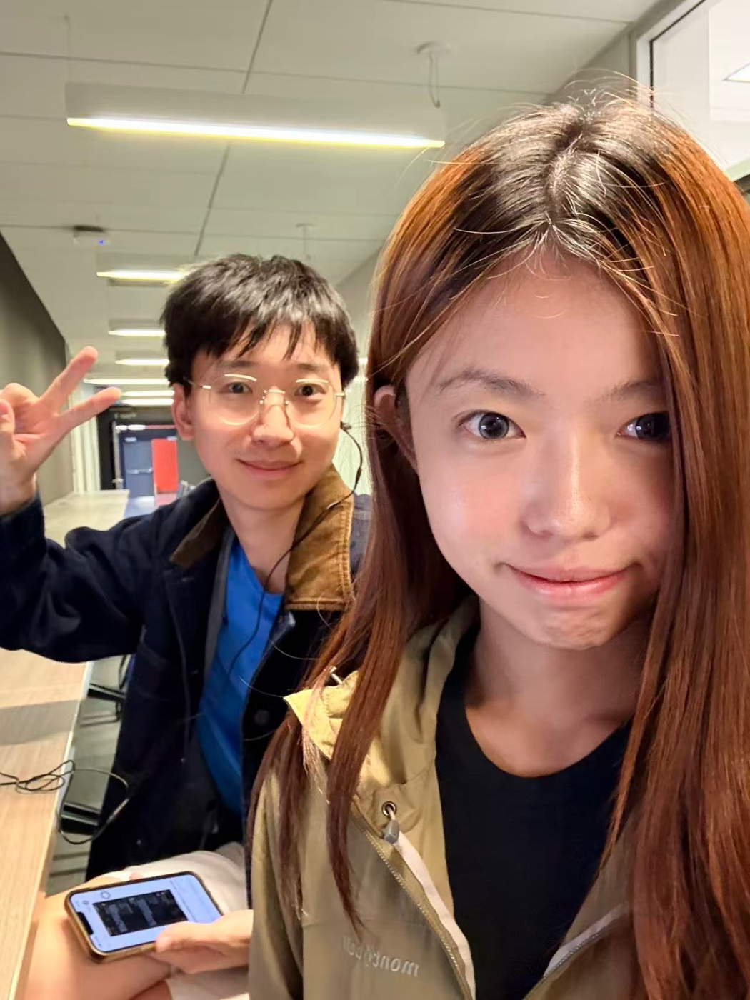

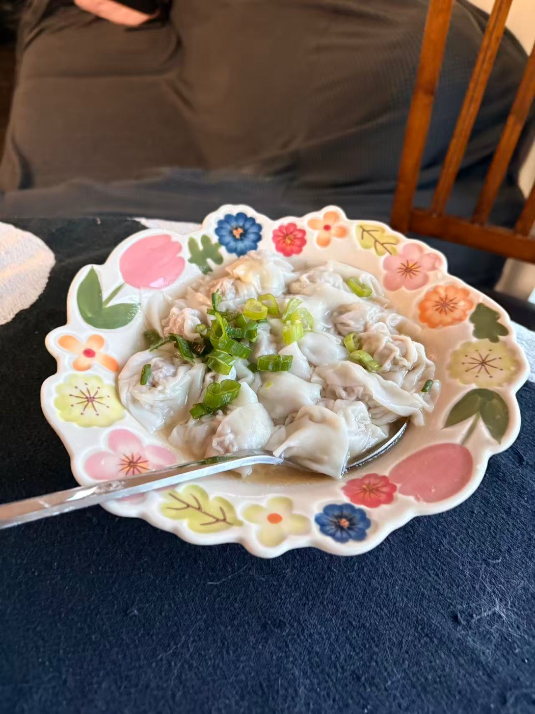


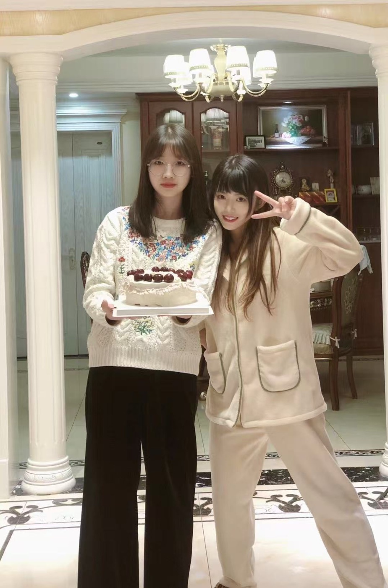

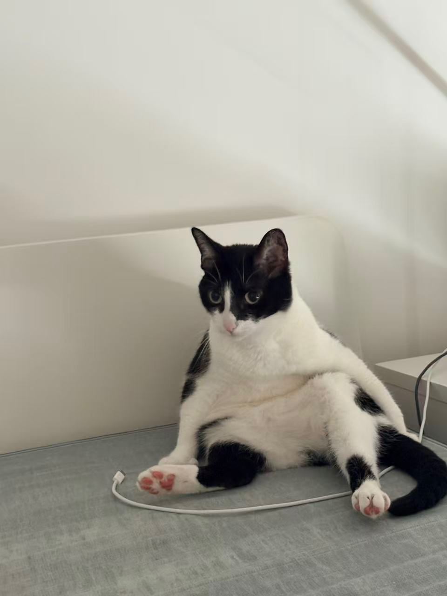

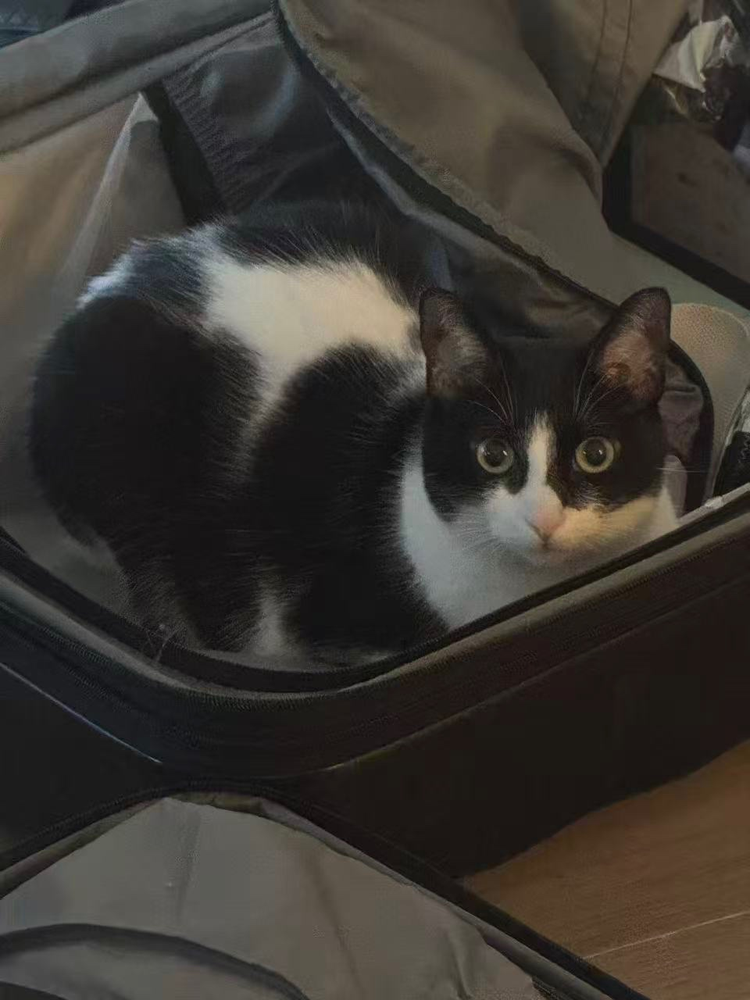

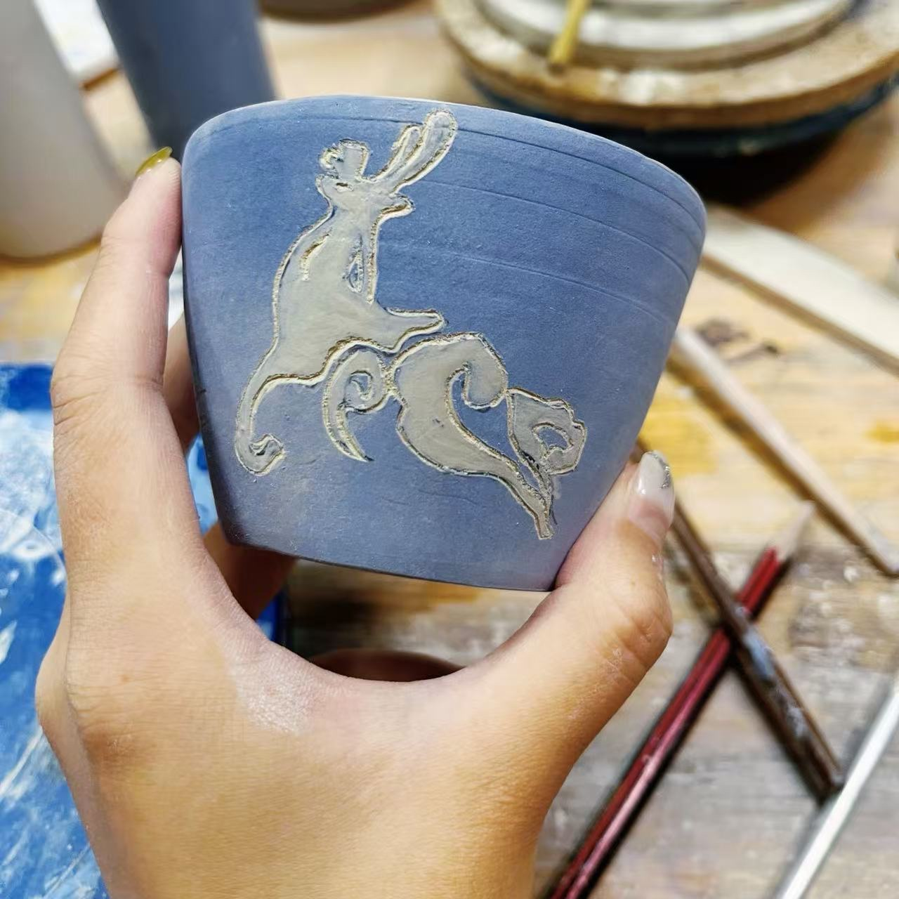

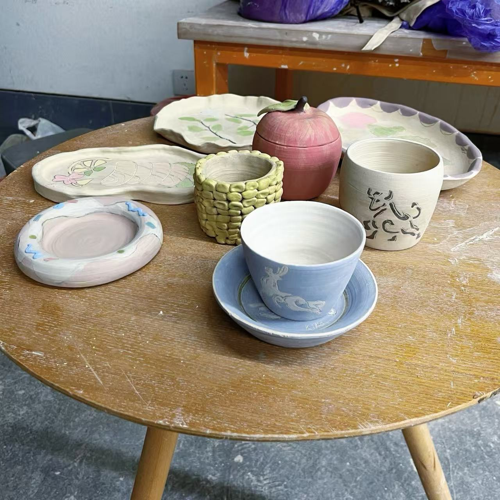

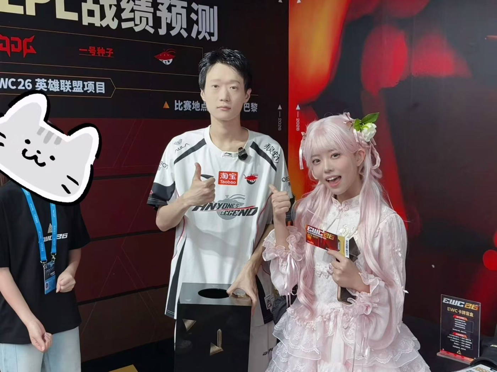